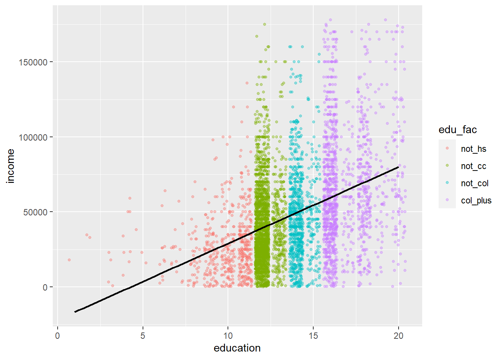
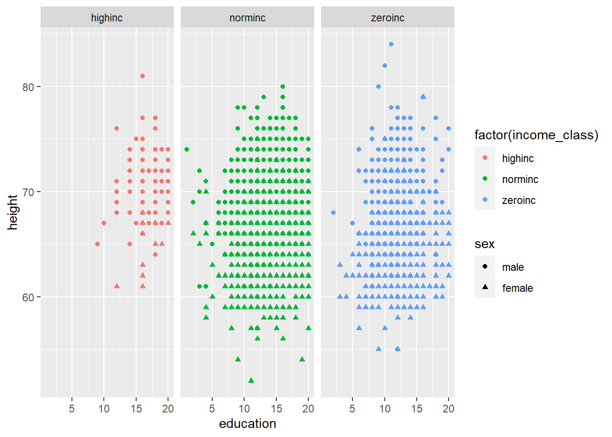

assignment_2
Innledning
I denne oppgaven har vi sett på sammenhengen mellom utdanning og inntekt, høyde og inntekt, utdanning og høyde, fordeling mellom menn og kvinner i ulike inntektsgrupper i forhold til høyde, men også fordelingen mellom menn og kvinner. De ulike inntektsgruppene er nullinntekt (hoydeZeroInc), normalinntekt (hoydeNormInc), høyinntekt (hoydeHighInc).Videre ser vi på hvordan observasjoner i hoydeZeroInc og hoydeHighInc skiller seg ut i forhold til hoydeNormInc når det kommer til høyde og utdanning.
Litteraturgjennomgang
Utdanning og inntekt
Når det kommer til sammenheng mellom utdanning og inntekt, viser det seg at menn som ikke ble uteksaminert fra videregående en halv tomme (1,27 cm) kortere enn gjennomsnittet, og er mer enn en tomme (2,54 cm) kortere enn en gjennomsnittlig høyskoleutdannet mann (Deaton and Arora 2009). Når det kommer til kvinner, er forskjellen litt mindre (Deaton and Arora 2009).
Så hvorfor har høyere mennesker bedre utdanning og høyere inntekt?
Ifølge Case and Paxson (2008) så har høyere mennesker større mulighet for å ha nådd sitt fulle kognitive potensiale enn lavere personer. Alt henger sammen med barndommen og hvor godt ernært et barn er gjennom hele barndommen. I tillegg henger det sammen med om barnet har vært skånet for barnesykdommer som har hatt potensialet til å bremse utviklingen i forhold til høyde. Har ikke barnet vært sykt, så vil de nå voksenhøyden som ligger i genet deres (Case and Paxson 2008). I tillegg nevner Case and Paxson (2008) at det er en sammenheng mellom utvikling kognitivt og fysisk. Det vil si at et barn som ikke har nådd sin fulle mulige høyde, har heller ikke utviklet sitt fulle kognitive potensiale. Det er nemlig barn som mangler full kognitiv utvikling som står for lavere utdanningsnivå og lavere inntekt i voksen alder (Case and Paxson 2008).
Høyde og inntekt
Når det kommer til forholdet mellom høyde og inntekt, har Deaton and Arora (2009) hentet data fra Gallup-Healthways Well-Being Index for å se på forholdet mellom høyde og inntekt. Ifølge Deaton and Arora (2009), var menn som var over gjennomsnittlig høyde (177,8 cm) et trinn på stigen over menn som er under gjennomsnittlig høyde. For kvinner er forskjellen mindre. Kvinner under gjennomsnittlig høyde (162,6 cm) ligger litt mindre enn en tidel av et trinn under kvinner med over gjennomsnittlig høyde. Forskjellene kan virke små, men sammenlignet med faktorer som påvirker stigen, er inntekt en utgjørende faktor (Deaton and Arora 2009). Øker vi høyden med en ekstra tomme på den såkalt stigen med effekten av en endring i inntekt, så vil hver ekstra tomme høyde ha samme effekt som en økning på 3,8% i familie inntekt for kvinner og 4,4% økning for menn.
Utdanning og høyde
Ifølge Case and Paxson (2008), er det sammenheng mellom utdanning og høyde som fører til økt inntekt. Dette skyldes at høyere mennesker har større sannsynlighet for å ha nådd sitt fulle kognitive potensial enn lavere personer (Case and Paxson 2008).
The echo: false option disables the printing of code (only output is displayed).
EDA av datasettet heights med utgangspunkt i sammenheng mellom utdanning og inntekt
Datasettet er kalt heights og er en del av pakken modelr, Wickham (2020), som er en utvidelspakke for statistikksystemet R, R Core Team (2021). Vi skal nå gjennomføre en EDA av datasettet med utgangspunkt i vår problemstilling som er sammenhengen mellom utdanning og inntekt ved bruk av kategorivariabel edu_fac:
- not_hs: 0-11 års utdanning
- not_cc: 11-14 års utdanning
- not_col: 14-16 års utdanning
- col_plus: 16-21 års utdanning
Vi ser at det er en sammenheng mellom inntekt og utdannelse. I figuren over ser vi at den linære regresjonslinjen viser en økning i inntekt for gitt lenger utdanning.
Videre skal vi ved hjelp av fasetter se på om det finnes en sammenheng mellom høyde og inntekt i forhold til hvilken utdanningsgruppe man er i.

Av fasettene ser man at de ulike utdanningsgruppene reagerer ulikt på hvordan høyde påvirker hvilke inntekt man har. Vi kan se av den linjere regresjonslinjen i de ulike farsettene at en lavere utdannelsegruppe har et lavere “startpunkt” for inntekt, hvor dette gradvis øker om man er høyere.
Det som skiller seg mest klart ut i de fire fasetene er at “not_hs” har en relativt flat linjer regresjonslinje, som tolkes til at dersom man ikke har fullført high school vil ikke man øke markant i inntekt dersom man er høyere.
Vi ser også at i utdanningsgruppen “col_plus” er stigningstallet til den linjere regresjonslinjen brattere, og kan tolkes til at dersom man i denne katogorivariabelen vil man ha en større økning i inntekt i forhold til økning i høyde.
Ser man på de to gjennverende katogorivariablene “not_cc” og “not_col” skiller ikke disse linjære regrisjonslinjene seg betraktelige fra hverandre i forhold til at man øker i inntekt gitt at man øker i høyde. Man ser av disse variablene at det er en økning i inntekt dersom man er høyere utdannet.

Fordelingen av menn & kvinner “hoydeZeroInc”
| Variable | N | Percent |
|---|---|---|
| sex | 1740 | |
| ... male | 745 | 43% |
| ... female | 995 | 57% |
Fordelingen av menn & kvinner “hoydehighInc”
| Variable | N | Percent |
|---|---|---|
| sex | 143 | |
| ... male | 131 | 92% |
| ... female | 12 | 8% |
Plottet under er en illustrasjon av hvilke innktekt “highinc”, “norminc” og “zeroinc” har, hvor vi skal videre se på hvilke andel menn & kvinner som utgjør de ulike innteksgruppene.

I fordelingen “hoydeHighInc” ser man et markant skille i fordelingen i menn og kvinner. Menn utgjør 92% av fordelingen “hoydeHighInc”, mens kvinner utgjør 8% av fordelingen.
I fordelingen “hoydeZeroInc” ser man at fordelingen mellom kvinner og menn er 43% menn og 57% Kvinner som utgjør fordelingen.
Plottet under er ment som en ildustrasjon av hvordan “hoydeHightInc”(rød), “hoydeZeroInc”(blå) skiller seg fra “hoydeNormInc” med utgangspunkt i høyde & utdanning. Dette plottet er ikke 100% representativt for fordelingene ettersom man ikke får plottet alle observarsjonene, men fungerer godt som en indikator for å vise skille i utdanning & høyde. Man ser at dersom man er i fordelingen “hoydeZeroInc” skorer majoriteten av observasjonene lavest på utdanning & høyde, mens man i “hoydeNormInc” skorer en større del av observasjonene høyere på utdanning & høyde enn “hoydeZeroInc”. Når det kommer til “hoydeHighInc” skorer denne klarest høyst på utdanning & høyde. Vi vil seinere i oppgaven se nærmere på dette i faktiske tall.
Warning: Removed 10 rows containing missing values (`geom_point()`).
| Variable | N | Mean | Std. Dev. | Min | Pctl. 25 | Pctl. 75 | Max |
|---|---|---|---|---|---|---|---|
| height | 5123 | 67 | 4 | 52 | 64 | 70 | 80 |
| education | 5121 | 13 | 2.5 | 1 | 12 | 16 | 20 |
| sex | 5123 | ||||||
| ... male | 2526 | 49% | |||||
| ... female | 2597 | 51% |
I fordelingen “hoydeNormInc” ser man at man totalt har 5123 observasjoner med 2 NA verdier i forhold til utdanning. Denne fordelingen har klart mest observasjoner som er naturlig for et slikt datasett. Vi kan lese ut av tabellen over at i denne fordelingen er gjennomsnittshøyden 67 tommer eller 170.18cm, mens gjennomsnittlig utdanningsnivå er 13år.
| Variable | N | Mean | Std. Dev. | Min | Pctl. 25 | Pctl. 75 | Max |
|---|---|---|---|---|---|---|---|
| height | 143 | 71 | 3.1 | 61 | 69 | 72 | 81 |
| education | 143 | 17 | 2.4 | 9 | 16 | 18 | 20 |
| sex | 143 | ||||||
| ... male | 131 | 92% | |||||
| ... female | 12 | 8% |
I fordelingen “hoydeNormInc” ser man at man totalt har 143 observasjoner. Denne fordelingen har klart minst observasjoner av naturlige årsaker. Vi kan lese ut av tabellen over at i denne fordelingen er gjennomsnittshøyden 71 tommer eller 180.34cm med et standaravvik på 3.1 tommer eller 7.874cm, mens gjennomsnittlig utdanningsnivå er 17år med et standaravvik på 2.4år.
| Variable | N | Mean | Std. Dev. | Min | Pctl. 25 | Pctl. 75 | Max |
|---|---|---|---|---|---|---|---|
| height | 1740 | 66 | 4.1 | 55 | 63 | 69 | 84 |
| education | 1732 | 12 | 2.4 | 2 | 11 | 13 | 20 |
| sex | 1740 | ||||||
| ... male | 745 | 43% | |||||
| ... female | 995 | 57% |
I fordelingen “hoydeZeroInc” ser man at man totalt har 1740 observasjoner, med 8 NA verdier tilknyttet utdanning. Vi kan lese ut av tabellen over at i denne fordelingen er gjennomsnittshøyden 66 tommer eller 167.64cm med et standaravvik på 4.1 tommer eller 10.414cm, mens gjennomsnittlig utdanningsnivå er 12år med et standaravvik på 2.4 år.
Ser man da tilbake på plottet som ble presantert lengre oppe ser man at med faktiske tall vil plottet være representativt. “hoydeHightInc” skiller seg i den forstand fra “hoydeNormInc” i forhold til utdanning & høyde at man er høyere utdannet og høyere. Man er i “hoydeHighInc” 10,16 cm høyere og 4 år høyere utdannet enn “hoydeNormInc” gjennomsnittslig. Når det kommer til “hoydeZeroInc” skiller dette seg fra “hoydeNormInc” i den forstand at man gjennomsnittslig er 2,54cm lavere og 1 år lavere utdannet.
Vi kan med utgangspunkt i disse observarsjonene sett vekk i fra andre faktorer se at utdanning & høyde har en innvirkning på hvilke inntekt mann har. Høyere høyde & utdanning vil gi en effekt i økt inntekt. .
References
Case, Anne, and Christina Paxson. 2008. “Stature and Status: Height, Ability, and Labor Market Outcomes. | Journal of Political Economy | EBSCOhost.” https://openurl.ebsco.com/contentitem/doi:10.1086%2F589524?sid=ebsco:plink:crawler&id=ebsco:doi:10.1086%2F589524.
Deaton, Angus, and Raksha Arora. 2009. “Life at the Top: The Benefits of Height.” Economics & Human Biology 7 (2): 133–36.